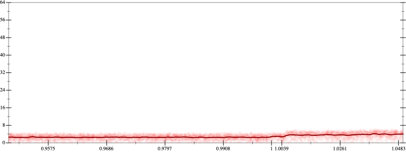
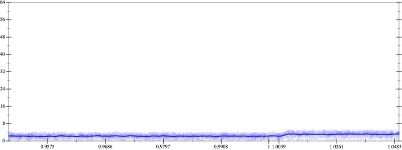
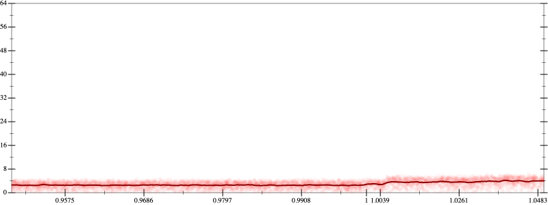
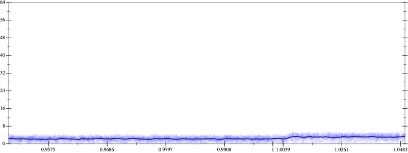

Initial program 2.9
\[\left(\left(\left(\left(\left(1.0 + -6.0 \cdot x\right) + 7.5 \cdot \left(x \cdot x\right)\right) + -3.333333 \cdot \left(\left(x \cdot x\right) \cdot x\right)\right) + 0.625 \cdot \left(\left(\left(x \cdot x\right) \cdot x\right) \cdot x\right)\right) + -0.05 \cdot \left(\left(\left(\left(x \cdot x\right) \cdot x\right) \cdot x\right) \cdot x\right)\right) + 0.001389 \cdot \left(\left(\left(\left(\left(x \cdot x\right) \cdot x\right) \cdot x\right) \cdot x\right) \cdot x\right)\]
- Using strategy
rm Applied associate-+l+2.9
\[\leadsto \left(\left(\left(\color{blue}{\left(1.0 + \left(-6.0 \cdot x + 7.5 \cdot \left(x \cdot x\right)\right)\right)} + -3.333333 \cdot \left(\left(x \cdot x\right) \cdot x\right)\right) + 0.625 \cdot \left(\left(\left(x \cdot x\right) \cdot x\right) \cdot x\right)\right) + -0.05 \cdot \left(\left(\left(\left(x \cdot x\right) \cdot x\right) \cdot x\right) \cdot x\right)\right) + 0.001389 \cdot \left(\left(\left(\left(\left(x \cdot x\right) \cdot x\right) \cdot x\right) \cdot x\right) \cdot x\right)\]
Applied simplify2.6
\[\leadsto \left(\left(\left(\left(1.0 + \color{blue}{\left(-6.0 + 7.5 \cdot x\right) \cdot x}\right) + -3.333333 \cdot \left(\left(x \cdot x\right) \cdot x\right)\right) + 0.625 \cdot \left(\left(\left(x \cdot x\right) \cdot x\right) \cdot x\right)\right) + -0.05 \cdot \left(\left(\left(\left(x \cdot x\right) \cdot x\right) \cdot x\right) \cdot x\right)\right) + 0.001389 \cdot \left(\left(\left(\left(\left(x \cdot x\right) \cdot x\right) \cdot x\right) \cdot x\right) \cdot x\right)\]
- Using strategy
rm Applied associate-+l+2.7
\[\leadsto \left(\color{blue}{\left(\left(1.0 + \left(-6.0 + 7.5 \cdot x\right) \cdot x\right) + \left(-3.333333 \cdot \left(\left(x \cdot x\right) \cdot x\right) + 0.625 \cdot \left(\left(\left(x \cdot x\right) \cdot x\right) \cdot x\right)\right)\right)} + -0.05 \cdot \left(\left(\left(\left(x \cdot x\right) \cdot x\right) \cdot x\right) \cdot x\right)\right) + 0.001389 \cdot \left(\left(\left(\left(\left(x \cdot x\right) \cdot x\right) \cdot x\right) \cdot x\right) \cdot x\right)\]
Applied simplify2.6
\[\leadsto \left(\left(\left(1.0 + \left(-6.0 + 7.5 \cdot x\right) \cdot x\right) + \color{blue}{{x}^{3} \cdot \left(0.625 \cdot x + -3.333333\right)}\right) + -0.05 \cdot \left(\left(\left(\left(x \cdot x\right) \cdot x\right) \cdot x\right) \cdot x\right)\right) + 0.001389 \cdot \left(\left(\left(\left(\left(x \cdot x\right) \cdot x\right) \cdot x\right) \cdot x\right) \cdot x\right)\]
- Using strategy
rm Applied associate-+l+2.5
\[\leadsto \left(\color{blue}{\left(1.0 + \left(\left(-6.0 + 7.5 \cdot x\right) \cdot x + {x}^{3} \cdot \left(0.625 \cdot x + -3.333333\right)\right)\right)} + -0.05 \cdot \left(\left(\left(\left(x \cdot x\right) \cdot x\right) \cdot x\right) \cdot x\right)\right) + 0.001389 \cdot \left(\left(\left(\left(\left(x \cdot x\right) \cdot x\right) \cdot x\right) \cdot x\right) \cdot x\right)\]
- Using strategy
rm Applied add-cube-cbrt2.5
\[\leadsto \left(\color{blue}{\left(\sqrt[3]{1.0 + \left(\left(-6.0 + 7.5 \cdot x\right) \cdot x + {x}^{3} \cdot \left(0.625 \cdot x + -3.333333\right)\right)} \cdot \sqrt[3]{1.0 + \left(\left(-6.0 + 7.5 \cdot x\right) \cdot x + {x}^{3} \cdot \left(0.625 \cdot x + -3.333333\right)\right)}\right) \cdot \sqrt[3]{1.0 + \left(\left(-6.0 + 7.5 \cdot x\right) \cdot x + {x}^{3} \cdot \left(0.625 \cdot x + -3.333333\right)\right)}} + -0.05 \cdot \left(\left(\left(\left(x \cdot x\right) \cdot x\right) \cdot x\right) \cdot x\right)\right) + 0.001389 \cdot \left(\left(\left(\left(\left(x \cdot x\right) \cdot x\right) \cdot x\right) \cdot x\right) \cdot x\right)\]
 
